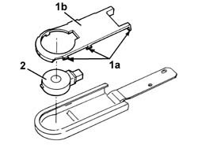

5050B64 RAIN SENSOR ELECTRONIC UNIT R R
- Path
- Procedures > 50 AUXILIARY UNITS > 5050 SCREEN WASHERS AND HEADLAMP WASH/WIPE > 5050B WINDSCREEN WASH/WIPE > 5050B64 RAIN SENSOR ELECTRONIC UNIT R R
- Kind
- repair procedure (removal / refitting; the operation number is the code)
- Applies to
- engines: 2.0 JTS, 3.2 V6, 1.9 JTD 16V; all production periods
- Interactive page
- https://sloeber94.github.io/elrnDB-aGt/en/#/125001570
Applies to: engines: 2.0 JTS, 3.2 V6, 1.9 JTD 16V; all production periods
 Removing
Removing
 Refitting
RefittingOp. 7040E50 FRONT MODULAR COURTESY LIGHT UNIT - R+R
Op. 7065C33 SUN BLIND WITH COURTESY MIRROR AND COURTESY LIGHT ONE LH OR RH R R
(left and right)
Op. 5050B66 RAIN SENSOR ELECTRONIC UNIT COVER - R R
1. Disengage the retainers (1a) and remove the protection (1b).
2. Remove the rain sensor.

Applies to: engines: 2.0 JTS, 3.2 V6, 1.9 JTD 16V; all production periods
Refitting
RemovingCheck that the new rain sensor is not damaged.
Fit the rain sensor in position.
Fit the protection in position and engage the retainers.
Op. 5050B66 RAIN SENSOR ELECTRONIC UNIT COVER - R R
Op. 7065C33 SUN BLIND WITH COURTESY MIRROR AND COURTESY LIGHT ONE LH OR RH R R
(left and right)
Topics linked from this page (3)
- 5050B66 RAIN SENSOR ELECTRONIC UNIT COVER - R R
- 7040E50 FRONT MODULAR COURTESY LIGHT UNIT - R+R
- 7065C33 SUN BLIND WITH COURTESY MIRROR AND COURTESY LIGHT ONE LH OR RH R R